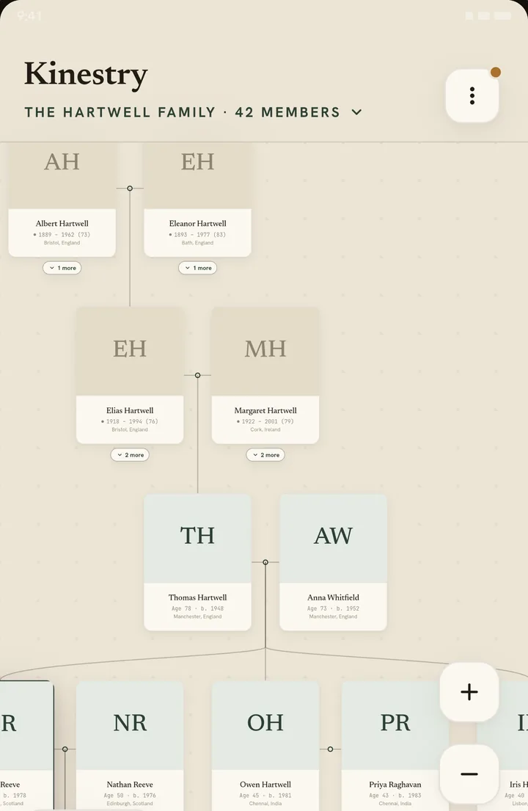
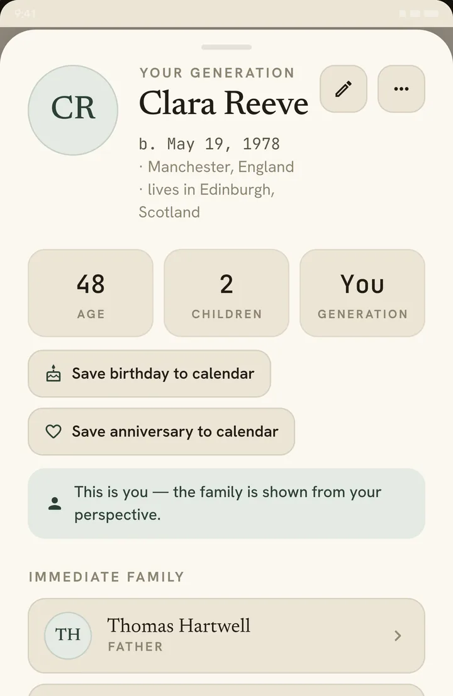
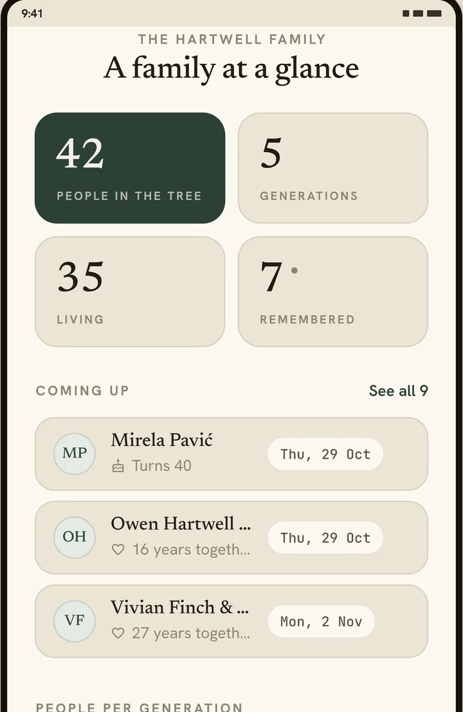
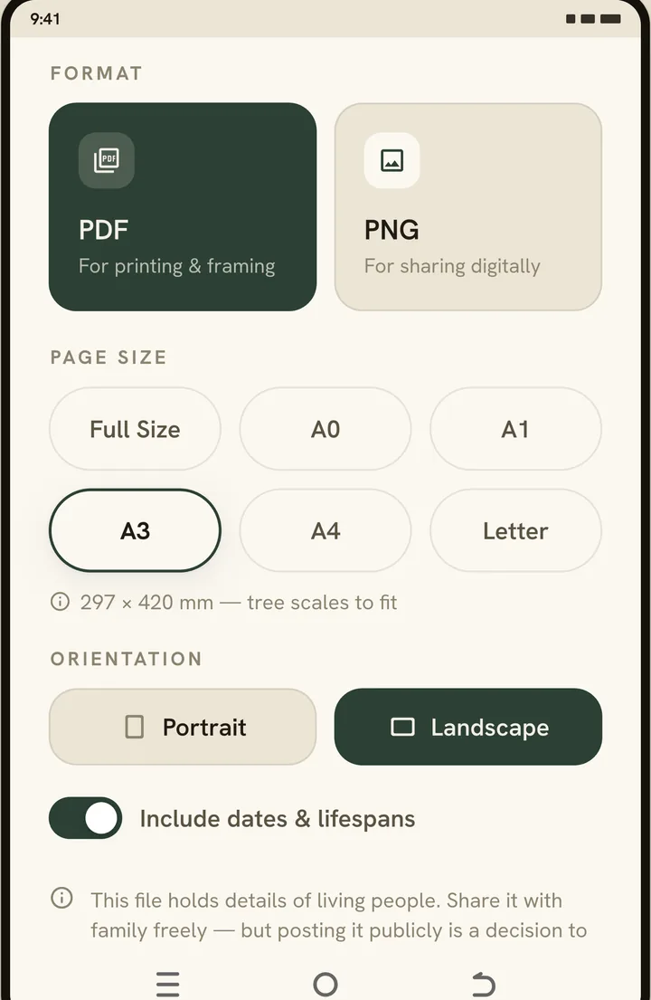
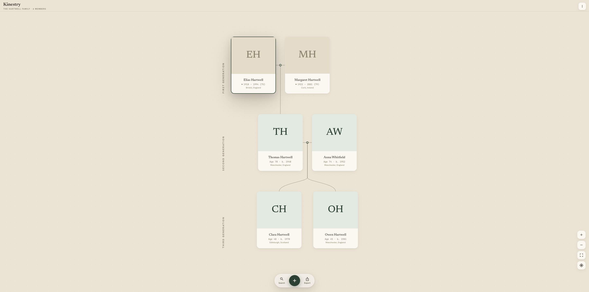

A canvas like paper
Warm tones, classic serif names, connectors drawn the way you'd draw them by hand. Hundreds of relatives stay smooth: we lay out a 532-person family to test it, and panning one of 350 on a mid-range phone barely drops a frame.
Build a living tree of the people you love — and keep it, privately, forever on your device. No cloud. No account. No subscription.
Tap two people to see how they're related.




Kinestry is a focused tool with one hero: the tree. Everything in it exists to help you record, explore and pass on your family's story.
Warm tones, classic serif names, connectors drawn the way you'd draw them by hand. Hundreds of relatives stay smooth: we lay out a 532-person family to test it, and panning one of 350 on a mid-range phone barely drops a frame.
Tap any two people and Kinestry names the relation, then traces the path between them one step at a time through the tree.
Year-only dates are welcome; grandma's exact birthday can stay a family mystery. Photos, places and notes on every person — and their age and where they live now, read straight off the card without opening anyone.
Mark a marriage as divorced or separated, with a date if you know it. Children and every other connection stay exactly as they are — the tree records what happened, it doesn't take anyone out of it.
Tapped the wrong name? Hold the row and the link comes apart on its own — nobody is deleted, so their dates, photo and notes survive exactly as you typed them. Removing someone who has family below them asks first and says how many people that is, and Undo brings every one of them back.
Birthdays, anniversaries and days of remembrance, gathered in one place. Turn on a reminder and it stays on your phone — no server ever learns whose birthday it is. Add one to your calendar and the phone opens the calendar app you already use, fields filled in, with nothing sent anywhere.
Keep several separate trees on one device and switch between them — your side, their side, a line you're still researching. Each is its own database; nothing leaks from one into another.
Twenty scripts, on screen and in printed exports: Arabic, Hebrew, Devanagari, Bengali, Gujarati, Gurmukhi, Tamil, Telugu, Kannada, Malayalam, Sinhala, Thai, Lao, Khmer, Burmese, Chinese, Korean, Armenian, Georgian and Ethiopic, plus Cyrillic and Greek. Every one carries its own typeface inside the app, so a PDF looks the way the tree does.
Export a vector PDF and send it to whoever you like. They need no app to open it, on a phone or on a laptop. There is a high-resolution image for the family group chat too, and GEDCOM, the universal format, so you're never locked in. Exports keep the card style you chose, so the photo you framed is the photo that goes out. A few hundred people fit on a single page; a tree wider than that exports a branch at a time, and the app says so before it tries. It prints at A4, Letter, A3, A1 or A0 as well, if you want it on a wall — here is how to choose the right size.
One tap writes a complete backup — photos included — to a file on your phone. Each tree keeps its own, so "last backed up" always means the family you are looking at. Restore any time, or carry your whole tree to a new device.
Open Kinestry in your laptop's browser over your home Wi-Fi. Edit with mouse and keyboard, upload photos from your computer, watch changes appear live on both screens — even with the phone locked in your pocket.
Your phone is the server. The connection never leaves your home network, and it ends the moment you say so. No account, no upload, nothing in between.

DESKTOP MODE IS ONKinestry has no servers, no accounts, no analytics and no trackers. Your family's names, dates and photos live in one place: your phone. The Play Store listing says "No data collected" because there is nothing to collect it with.
No. Kinestry has no servers, no accounts, no analytics and no trackers, so there is nowhere for it to go. Names, dates and photos are written to a database on your own device and stay there.
There is no cloud copy — that is the trade the app makes for privacy, and it is a real one. Kinestry writes a backup file you keep yourself, so make one and put it somewhere safe. A tree that exists only on a lost phone is gone.
Yes, and without deleting anyone. Hold the row in someone's immediate family and Kinestry offers to disconnect that one link, telling you exactly who stops being linked to whom before it happens. The people stay, with their dates, photos and notes untouched, and an Undo button puts the link back if you change your mind.
No. Kinestry is free. There are no purchases inside it, no subscription and no adverts.
Not at the moment. Kinestry is an Android app, available only on Google Play — a copy from anywhere else is not ours.
Yes. Desktop Mode serves your tree to a browser on the same Wi‑Fi, so you can edit on a big screen with a keyboard. The connection is between your phone and your own computer; nothing travels over the internet.
Yes, and in print as well as on screen. Kinestry carries its own typefaces for Arabic, Hebrew, Devanagari (Hindi and Marathi), Bengali, Gujarati, Gurmukhi, Tamil, Telugu, Kannada, Malayalam, Sinhala, Thai, Lao, Khmer, Burmese, Chinese, Korean, Armenian, Georgian and Ethiopic, as well as Cyrillic and Greek. They ship inside the app rather than being fetched, so a name looks the same on the printed PDF as it does on the phone.
Kinestry is made by one person, not a company. There are no investors to answer to and nothing to sell — which is the only reason an app like this can promise to stay free and stay off the cloud.
Developer
Which leaves time — and time is the one thing a free app does not pay for.
If Kinestry has been useful, you can buy me a coffee. Nothing in the app changes either way. No feature is held back, nothing is unlocked, and you will never be asked inside the app.
Your own. The tree grows from there, and it never leaves your phone.
Download on Google PlayFree · No account · Android